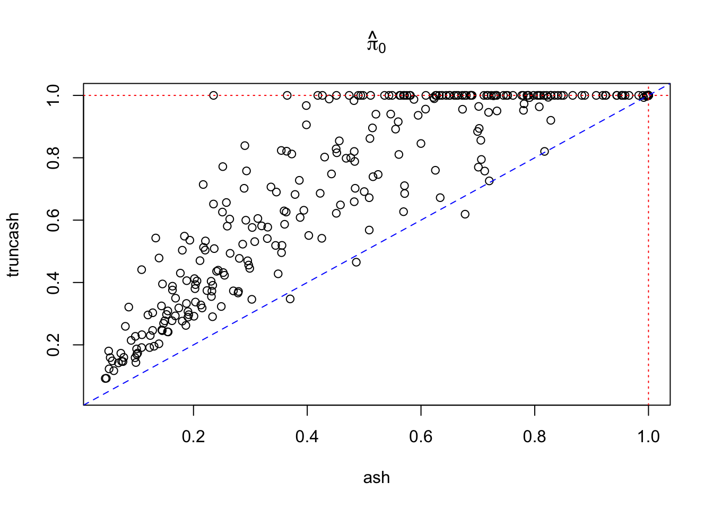
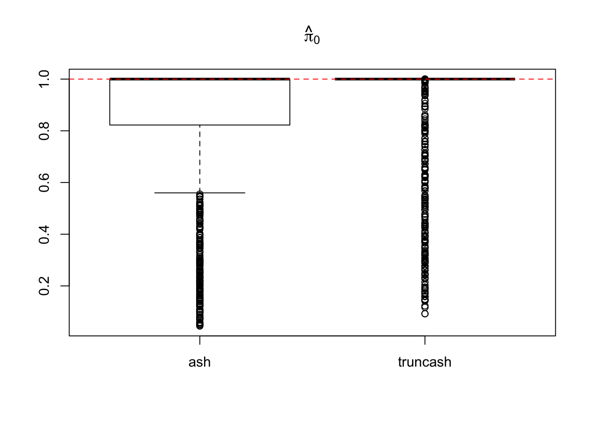

ashr and truncashLast updated: 2017-12-21
Code version: 6e42447
Using correlated global null data simulated from GTEx/Liver, \(\hat\pi_0\) is estimated by truncash and ashr. Ideally the estimates should be close to \(1\).
In truncash, the threshold is \(T = 1.96\).
library(ashr)
source("../code/truncash.R")p = read.table("../output/p_null_liver_777.txt")
z = read.table("../output/z_null_liver_777.txt")
betahat = read.table("../output/betahat_null_liver_777.txt")
m = dim(p)[1]
n = dim(p)[2]
pihat0.ash = pihat0.truncash = c()
for (i in 1:m) {
betahat_trial = as.numeric(betahat[i, ])
sebetahat_trial = - betahat_trial / as.numeric(z[i, ])
fit.ash = ashr::ash(betahat_trial, sebetahat_trial, method = "fdr", mixcompdist = "normal")
pihat0.ash[i] = get_pi0(fit.ash)
fit.truncash = truncash(betahat_trial, sebetahat_trial, t = qnorm(0.975))
pihat0.truncash[i] = get_pi0(fit.truncash)
}False positive rate by ash
mean(pihat0.ash < 1)[1] 0.287False positive rate by truncash
mean(pihat0.truncash < 1)[1] 0.202Compare \(\hat\pi_0\) estimated by ash and truncash
xlim = c(min(c(pihat0.ash, pihat0.truncash)), 1)
plot(pihat0.ash, pihat0.truncash, xlim = xlim, ylim = xlim, xlab = "ash", ylab = "truncash", main = expression(hat(pi)[0]))
abline(0, 1, lty = 2, col = "blue")
abline(v = 1, lty = 3, col = "red")
abline(h = 1, lty = 3, col = "red")
boxplot(pihat0.ash, pihat0.truncash, main = expression(hat(pi)[0]), names = c("ash", "truncash"))
abline(h = 1, lty = 2, col = "red")
sessionInfo()R version 3.4.3 (2017-11-30)
Platform: x86_64-apple-darwin15.6.0 (64-bit)
Running under: macOS High Sierra 10.13.2
Matrix products: default
BLAS: /Library/Frameworks/R.framework/Versions/3.4/Resources/lib/libRblas.0.dylib
LAPACK: /Library/Frameworks/R.framework/Versions/3.4/Resources/lib/libRlapack.dylib
locale:
[1] en_US.UTF-8/en_US.UTF-8/en_US.UTF-8/C/en_US.UTF-8/en_US.UTF-8
attached base packages:
[1] stats graphics grDevices utils datasets methods base
other attached packages:
[1] SQUAREM_2017.10-1 ashr_2.2-2
loaded via a namespace (and not attached):
[1] Rcpp_0.12.14 knitr_1.17 magrittr_1.5
[4] workflowr_0.8.0 MASS_7.3-47 doParallel_1.0.11
[7] pscl_1.5.2 lattice_0.20-35 foreach_1.4.4
[10] stringr_1.2.0 tools_3.4.3 parallel_3.4.3
[13] grid_3.4.3 git2r_0.20.0 htmltools_0.3.6
[16] iterators_1.0.9 yaml_2.1.16 rprojroot_1.3-1
[19] digest_0.6.13 Matrix_1.2-12 codetools_0.2-15
[22] evaluate_0.10.1 rmarkdown_1.8 stringi_1.1.6
[25] compiler_3.4.3 backports_1.1.2 truncnorm_1.0-7 This R Markdown site was created with workflowr